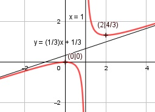

Aufgabe 116 x2 f(x) = ------- 3x - 3 Quotientenregel erste Ableitung: u = x2, u' = 2x v = 3x - 3, v' = 3 2x * (3x - 3) - 3 * x2 f'(x) = -------------------------- (3x - 3)2 6x2 - 6x - 3x2 3x2 - 6x f'(x) = ------------------ = ----------- (3x - 3)2 (3x - 3)2 Quotientenregel zweite Ableitung: u = 3x2 - 6x, u' = 6x - 6 v = (3x - 3)2 Kettenregel: v' = 2 * 3 * (3x - 3) = 6 * (3x - 3) (6x-6)*(3x-3)2 - 6*(3x-3)*(3x2-6x) f''(x) = ------------------------------------ (3x - 3)4 (3x-3)*[(6x-6)(3x-3) - 6*(3x2-6x) f''(x) = ----------------------------------- (3x - 3)4 18x2 - 36x + 18 - 18x2 + 36x f''(x) = ------------------------------- (3x - 3)3 18 f''(x) = ---------- (3x - 3)3 Zur Beurteilung, ob f'''(x) ≠ 0 : (Begründung siehe Aufgabe 105) u = 18, u' = 0 u' 0 f'''(x) = --- = ---------- = 0 für alle x ≠ 1 v (3x - 3)3 Polstellen, Nenner = 0: 3x - 3 = 0 |+3 3x = 3 |:3 x = 1 Nenner = 0 und Zähler = 12 = 1 ≠ 0 --> senkrechte Asymptote Definitionsbereich: -∞ < x < ∞, x ≠ 1 Zählergrad größer als Nennergrad --> Näherungskurve 2 f(x) = x2 : 3x - 3 = (1/3)x + 1/3 - -------- -(x2 - x) 3x - 3 ---------- x -(x - 1) -------- -2 2 (1/3)x + 1/3 - ------- geht gegen 3x - 3 (1/3)x + 1/3 für x --> ± ∞ Wertebereich: -∞ < f(x) ≤ 0 und 4/3 ≤ f(x) < ∞ (siehe Extrempunkte) Symmetrie zur y-Achse bzw. zum Punkt (0|0): (-x)2 x2 f(-x) = ------------ = --------- 3*(-x) - 3 -3x - 3 x3 f(-x)= ---------- ≠ f(x) -(3x + 3) keine Achsensymmetrie x3 -f(-x)= -------- ≠ f(x) 3x + 3 keine Punktsymmetrie Nullstellen: f(x) = 0 x2 --------- = 0 |*(3x - 3)) 3x - 3 x2 = 0 |ⱱ x1,2 = 0 --> Berührpunkt Schnittpunkt mit der y-Achse: x = 0 02 f0 = ----------- = 0 3 * 0 - 3 Sy(0|0) Extrempunkte: f'(x) = 0 3x2 - 6x ----------- = 0 |*(3x - 3)2 (3x - 3)2 3x2 - 6x = 0 3x * (x - 2) = 0 3x = 0 |:3 x1 = 0, f(0) = 0 x - 2 = 0 |+2 22 4 x2 = 2; f(2) = ----------- = --- 3 * 2 - 3 3 18 f''(2) = -------------- > 0 --> Tiefpunkt (2|4/3) (3 * 2 - 3)3 18 f''(0) = ---------- < 0 --> Hochpunkt (0|0) 3 * 0 - 3 Wendepunkte: f''(x) = 0 18 ---------- = 0 |*(3x - 3)3 (3x - 3)3 18 = 0 --> Widerspruch --> keine Wendepunkte Graph:
